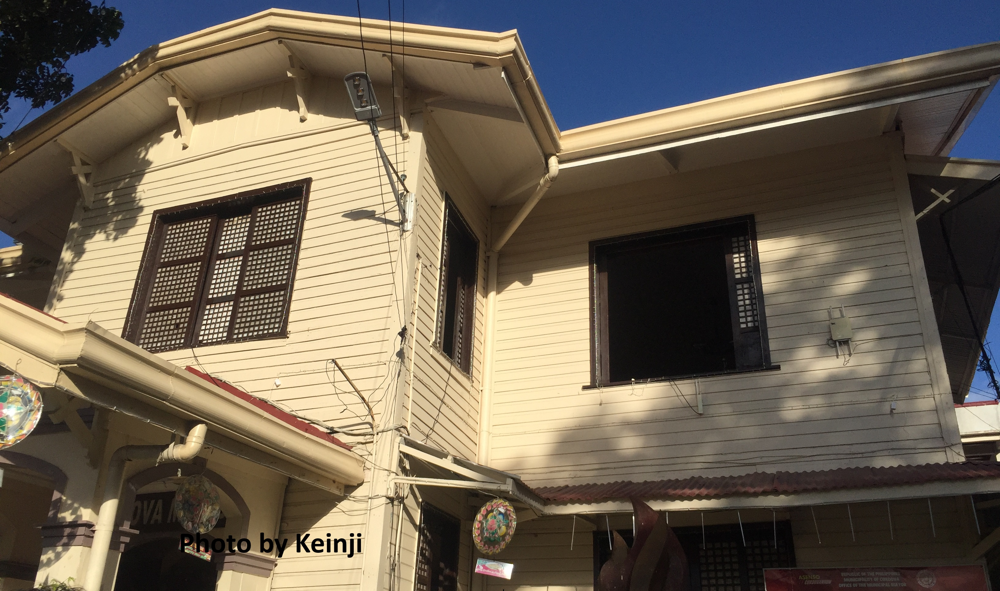

PRESERVING THE PAST

In the Municipality of Cordova there was an old house owned by the political clan “Sitoy”
which is now a Museum of Cordova the museum is free no entrance.
It has an religious artifacts that was used during the early age of the Church(San Roque Cordova).
And the other antique items donated by the local Cordovanhons to preserve the past of Cordova and to look the culture of Cordova.